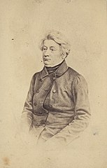
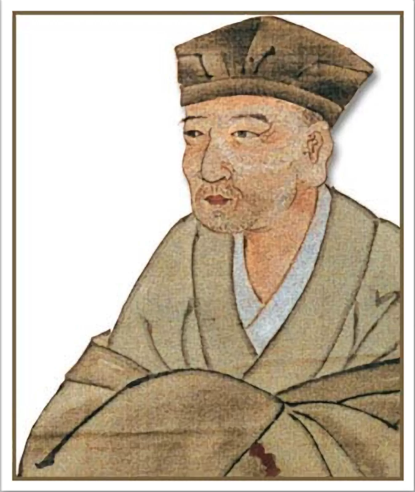

Stepy Akermańskie
Adam Mickiewicz
Zaświeciło słońce, a z ziemskiego krągu
Gdzieś zniknęły błyskawice, gdzieś zgasło wołanie;
Wstając w ciemnym niebie, białe zorze lśnią,
Ale cicho, jak z daleka przychodzi zapłakane.
أمثلة على الشعر
محمود درويش
فينا الذي لا يملأ مقاعده في العشق
ما بين موجةٍ وأخرى تضيء مصباحا
وفينا الذي يرفع الشمسَ من نافذته
كلّ صباحٍ ويجلسُ في انتظار الليل

詩の例
松尾芭蕉
古池や 蛙飛び込む 水の音
夏草や 兵どもが 夢の跡
初しぐれ 猿も小蓑を ほしげ也